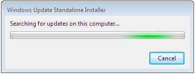
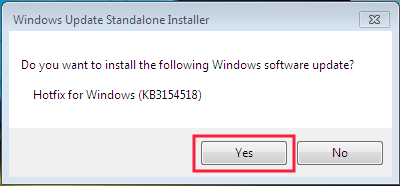
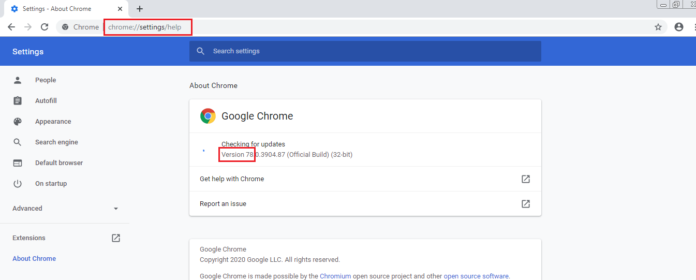

Instalasi Software Pendukung
Windows 7 atau 8
Langkah menginstall Software Pendukung OtomaX untuk Windows 7 atau Windows 8 adalah sebagai berikut:
- Install Microsoft .Net Framework
- Install Internet Explorer versi 11
- Install Transport Layer Security (TLS) v1.2
- Install Google Chrome
- Install Chrome Driver
- Install Selenium WebDriver
- Install Microsoft SQL Server Express
- Install Microsoft SQL Server Management Studio Express
Install Microsoft .Net Framework
Pertama, install Microsoft .Net Framework sebagai berikut:
- Cari file Microsoft .Net Framework yang sudah Anda download. Jika belum download silahkan download dahulu disini.
-
Klik 2x pada file Microsoft .Net Framework, akan muncul jendela seperti di bawah pilih I have read and accept the license terms. Kemudian klik Install.

-
Tunggu proses verifikasi data

- Jika muncul popup seperti di bawah ini klik YES
- Tunggu proses instalasi
- Instalasi sukses, klik Finish.

Install Internet Explorer versi 11
Kedua, install Internet Explorer versi 11 sebagai berikut:
- Download Internet Explorer versi 11 klik disini.
-
Cari file hasil download, klik 2x dan kemudian klik tombol Install.

-
Tunggu proses instalasi.

-
Instalasi selesai, klik tombol Restart now

- Setelah restart, buka Internet Explorer versi 11, tekan Alt + X pada keyboard, lalu pilih Internet Options.
-
- Untuk pengguna Windows 7 -> klik tab Programs, klik tombol Make Default -> klik tombol OK dan kemudian tutup Internet Explorer.
- Untuk pengguna Windows 10 -> Klik tab Programs -> klik Make Internet Explorer the default browser -> pada panel Programs (sebelah kiri) cari dan pilih Internet Explorer -> klik Set this program as default -> klik tombol OK -> klik tombol OK lagi dan kemudian tutup Internet Explorer.
- Selesai.
Catatan: Apabila Anda menggunakan Windows 7 pastikan telah Windows 7 SP 1 sebelum menginstall Internet Explorer versi 11; jikalau belum, download dan install Service Pack 1 (SP 1) terlebih dahulu klik disini.
Install Transport Layer Security (TLS) v1.2
Ketiga, install Transport Layer Security (TLS) v1.2 sebagai berikut:
- Download Transport Layer Security (TLS) v1.2 klik disini.
-
Cari file hasil download, klik 2x, kemudian tunggu proses persiapan instalasi.

-
Klik tombol Yes.

-
Tunggu proses instalasi.

-
Instalasi selesai, klik tombol Restart Now.

Install Google Chrome
Keempat, install Google Chrome sebagai berikut:
- Download Google Chrome, klik disini.
-
Cari file hasil download, klik 2x, apabila muncul jendela seperti di bawah ini klik tombol Run.

-
Apabila muncul jendela seperti di bawah ini klik tombol Yes.

-
Tunggu proses persiapan instalasi.

-
Tunggu proses instalasi.


- Masuk Local Disk (C): -> Program Files atau Program Files (x86) -> Google -> Update -> pada file GoogleUpdate ganti namanya menjadi GoogleUpdateNoUpdate.
- Selesai.
Install Chrome Driver
Kelima, install Chrome Driver sebagai berikut:
-
Buka Google Chrome, pada search bar ketik: chrome://settings/help lalu tekan Enter di keyboard dan catat versi Google Chrome.

- Download Chrome Driver yang versinya sama dengan Google Chrome, klik disini. Misal Google Chrome-nya v78, maka download Chrome Driver v78.
- Cari file hasil download, extract dan kemudian copy serta paste file hasil extract di folder OtomaX lihat disini atau folder lokasi instalasi OtomaX Anda.
- Selesai.
Install Selenium WebDriver
Keenam, install Selenium WebDriver sebagai berikut:
- Download Selenium WebDriver, klik disini.
- Cari file hasil download, extract dan kemudian copy serta paste file hasil extract di folder OtomaX lihat disini atau folder lokasi instalasi OtomaX Anda.
- Selesai.
Install Microsoft SQL Server Express
Ketujuh, install Microsoft SQL Server Express sebagai berikut:
- Cari file Microsoft SQL Server Express yang sudah Anda download. Jika belum download silahkan download dahulu disini.
- Klik 2x pada file Microsoft SQL Server Express, akan muncul jendela seperti di bawah, silahkan ditunggu.
- Klik Yes.
- Klik New installation or add features to an existing installation.

- Centang checkbox I accept the license terms dan klik Next.

- Klik Next.

- Klik Next.
- Klik Next.
- Pilih Windows authentication mode, dan klik Next.

- Klik Next.
- Install sukses, Klik Close.
Install Microsoft SQL Server Management Studio Express
Kedelapan, install Microsoft SQL Server Management Studio Express sebagai berikut:
- Cari file Microsoft SQL Server Management Studio Express yang sudah Anda download. Jika belum download silahkan download dahulu disini.
- Klik 2x pada file Microsoft SQL Server Management Studio Express, akan muncul jendela seperti di bawah, silahkan tunggu.

- Klik Yes
- Klik New installation or add features to an existing installation.
- Klik Next.
- Centang checkbox I accept the license terms, dan kemudian klik Next.

- Klik Next.

- Klik Next.


- Install sukses, Klik Close.

Selesai
Selanjutnya install Sotware OtomaX Free Edition, selengkapnya klik disini.
Catatan: Tata cara di atas berlaku untuk Windows 7/8 32 bit maupun 64 bit.